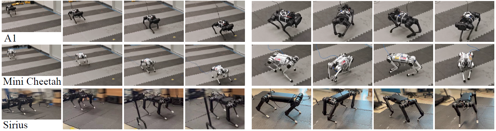

Gilbert Feng (1)Hongbo Zhang (2)Zhongyu Li (1)Xue Bin Peng (1)Bhuvan Basireddy (1)Linzhu Yue (2)Zhitao Song (2)Lizhi Yang (1)Yunhui Liu (2)Koushil Sreenath (1)Sergey Levine (1)
(1) University of California, Berkeley(2) The Chinese University of Hong Kong

Abstract
Recent years have seen a surge in commercially-available and affordable
quadrupedal robots, with many of these platforms being actively used in
research and industry. As the availability of legged robots grows, so
does the need for controllers that enable these robots to perform useful
skills. However, most learning-based frameworks for controller
development focus on training robot-specific controllers, a process that
needs to be repeated for every new robot. In this work, we introduce a
framework for training generalized locomotion (GenLoco) controllers for
quadrupedal robots. Our framework synthesizes general-purpose locomotion
controllers that can be deployed on a large variety of quadrupedal robots
with similar morphologies. We present a simple but effective morphology
randomization method that procedurally generates a diverse set of
simulated robots for training. We show that by training a controller on
this large set of simulated robots, our models acquire more general
control strategies that can be directly transferred to novel simulated
and real-world robots with diverse morphologies, which were not observed
during training.
@inproceedings{
GenLoco2022,
title={GenLoco: Generalized Locomotion Controllers for Quadrupedal Robots},
author={Feng, Gilbert and Zhang, Hongbo and Li, Zhongyu and Peng, Xue Bin and Basireddy, Bhuvan and Yue, Linzhu and SONG, ZHITAO and Yang, Lizhi and Liu, Yunhui and Sreenath, Koushil and Levine, Sergey},
booktitle={Proceedings of The 6th Conference on Robot Learning},
pages={1893--1903},
year={2023},
editor={Liu, Karen and Kulic, Dana and Ichnowski, Jeff},
volume={205},
series={Proceedings of Machine Learning Research},
month={14--18 Dec},
publisher={PMLR},
url={https://proceedings.mlr.press/v205/feng23a.html}
}